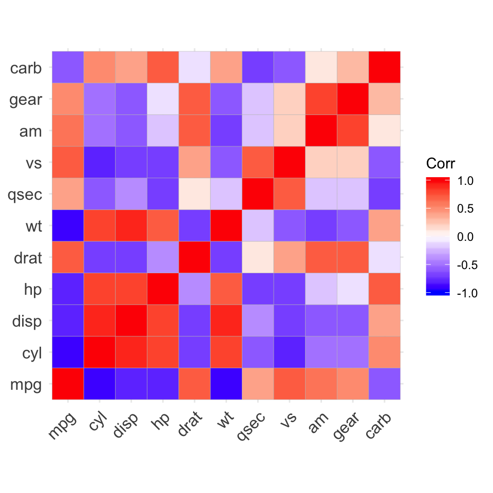
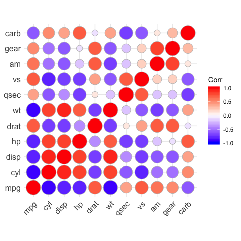
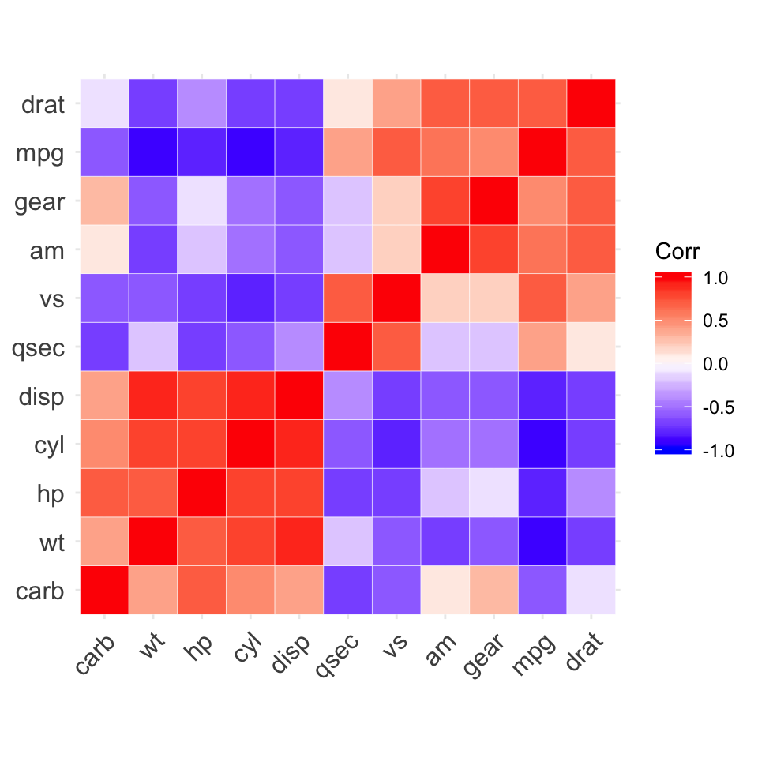
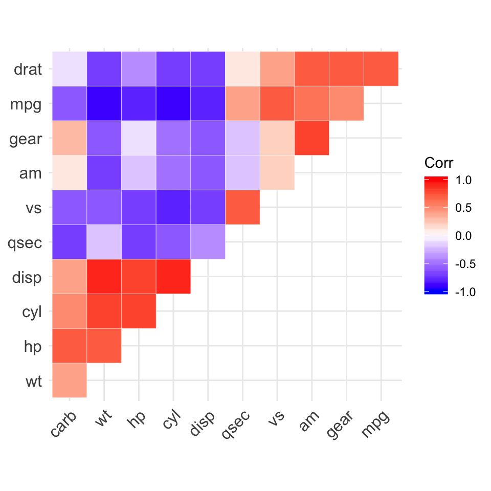
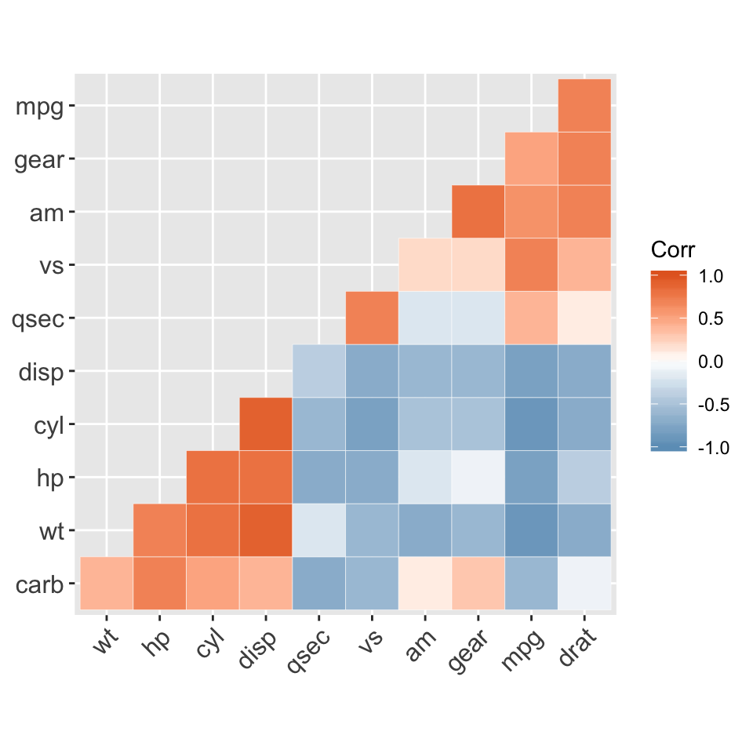
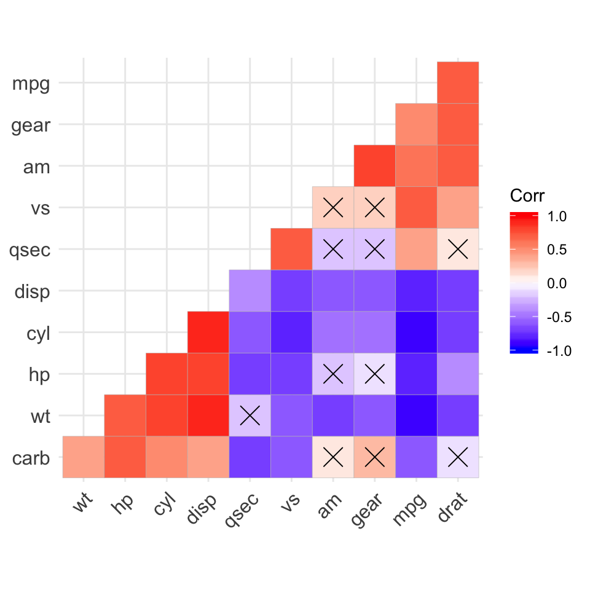
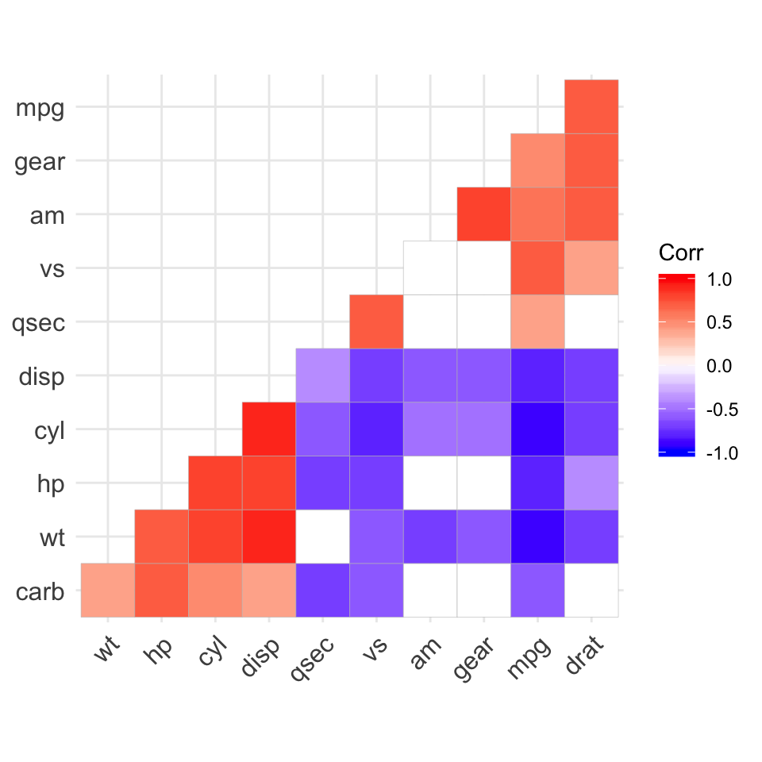

The ggcorrplot package can be used to visualize easily a correlation matrix using ggplot2. It provides a solution for reordering the correlation matrix and displays the significance level on the correlogram. It includes also a function for computing a matrix of correlation p-values.
Find out more at http://www.sthda.com/english/wiki/ggcorrplot-visualization-of-a-correlation-matrix-using-ggplot2.
Installation and loading
ggcorrplot can be installed from CRAN as follow:
install.packages("ggcorrplot")
Or, install the latest version from GitHub:
# Install if(!require(devtools)) install.packages("devtools") devtools::install_github("kassambara/ggcorrplot")
# Loading library(ggcorrplot)
Getting started
Compute a correlation matrix
The mtcars data set will be used in the following R code. The function cor_pmat()
in * * ggcorrplot * *
computes a matrix of correlation p-values.
# Compute a correlation matrix data(mtcars) corr <- round(cor(mtcars), 1) head(corr[, 1:6]) #> mpg cyl disp hp drat wt #> mpg 1.0 -0.9 -0.8 -0.8 0.7 -0.9 #> cyl -0.9 1.0 0.9 0.8 -0.7 0.8 #> disp -0.8 0.9 1.0 0.8 -0.7 0.9 #> hp -0.8 0.8 0.8 1.0 -0.4 0.7 #> drat 0.7 -0.7 -0.7 -0.4 1.0 -0.7 #> wt -0.9 0.8 0.9 0.7 -0.7 1.0 # Compute a matrix of correlation p-values p.mat <- cor_pmat(mtcars) head(p.mat[, 1:4]) #> mpg cyl disp hp #> mpg 0.000000e+00 6.112687e-10 9.380327e-10 1.787835e-07 #> cyl 6.112687e-10 0.000000e+00 1.802838e-12 3.477861e-09 #> disp 9.380327e-10 1.802838e-12 0.000000e+00 7.142679e-08 #> hp 1.787835e-07 3.477861e-09 7.142679e-08 0.000000e+00 #> drat 1.776240e-05 8.244636e-06 5.282022e-06 9.988772e-03 #> wt 1.293959e-10 1.217567e-07 1.222320e-11 4.145827e-05
Correlation matrix visualization
# Visualize the correlation matrix # -------------------------------- # method = "square" (default) ggcorrplot(corr)

# method = "circle" ggcorrplot(corr, method = "circle") #> Warning: `guides(<scale> = FALSE)` is deprecated. Please use `guides(<scale> = #> "none")` instead.

# Reordering the correlation matrix # -------------------------------- # using hierarchical clustering ggcorrplot(corr, hc.order = TRUE, outline.color = "white")

# Types of correlogram layout # -------------------------------- # Get the lower triangle ggcorrplot(corr, hc.order = TRUE, type = "lower", outline.color = "white")
# Get the upper triangle ggcorrplot(corr, hc.order = TRUE, type = "upper", outline.color = "white")

# Change colors and theme # -------------------------------- # Argument colors ggcorrplot( corr, hc.order = TRUE, type = "lower", outline.color = "white", ggtheme = ggplot2::theme_gray, colors = c("#6D9EC1", "white", "#E46726") )

# Add correlation coefficients # -------------------------------- # argument lab = TRUE ggcorrplot(corr, hc.order = TRUE, type = "lower", lab = TRUE)
# Add correlation significance level # -------------------------------- # Argument p.mat # Barring the no significant coefficient ggcorrplot(corr, hc.order = TRUE, type = "lower", p.mat = p.mat)

# Leave blank on no significant coefficient ggcorrplot( corr, p.mat = p.mat, hc.order = TRUE, type = "lower", insig = "blank" )
